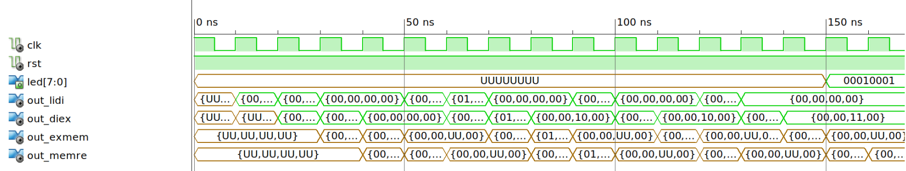

Projet système info
David LIVET - Jérémie BOUTOILLE
Juin 2015
Agenda
Spécificités de notre :
- Compilateur
- Interpréteur
- Microprocesseur
Compilateur
Instruction manager
Petite librairie pour gérer les instructions émises.
Les instructions sont placées dans une liste chainée.
Instruction manager
int main(int argc, char const *argv[])
{
instr_manager_init();
instr_emit_afc(1, 10);
instr_emit_afc(2, 10);
instr_emit_add(1, 1, 2);
instr_emit_pri(1);
instr_manager_print_textual();
return 0;
}
afc [$1], 10
afc [$2], 10
add [$1], [$1], [$2]
pri [$1]
Labels, conditions et boucles
Labels
Instruction «virtuelle». Pas compilé, pas executé.
int label_ref = label_add("main");
instr_emit_label(label_ref);
instr_emit_afc(1, 10);
instr_emit_afc(2, 10);
instr_emit_add(1, 1, 2);
instr_emit_pri(1);
instr_emit_jmp(label_ref);
main:
afc [$1], 10
afc [$2], 10
add [$1], [$1], [$2]
pri [$1]
jmp main
afc [$1], 10
afc [$2], 10
add [$1], [$1], [$2]
pri [$1]
jmp -4
Conditions et boucles
Utilisation des règles uniquement, pas de liste !
If : tIF tPARENT_OPEN Condition tPARENT_CLOSE BlocOp
Else : tELSE BlocOp
IfElse : If
| If Else
Condition : ExprArith ComparaisonOperator ExprArith
Conditions et boucles
Utilisation des règles uniquement, pas de liste !
If : tIF tPARENT_OPEN Condition tPARENT_CLOSE BlocOp
Else : tELSE BlocOp
IfElse : If
| If Else
Condition : ExprArith ComparaisonOperator ExprArith
{
$$ = get_label();
instr_emit_jmf(x, $$);
}
Conditions et boucles
Utilisation des règles uniquement, pas de liste !
If : tIF tPARENT_OPEN Condition tPARENT_CLOSE BlocOp
{
$$ = get_label();
instr_emit_jmp($$);
instr_emit_label($3);
}
Else : tELSE BlocOp
IfElse : If
| If Else
Condition : ExprArith ComparaisonOperator ExprArith
{
$$ = get_label();
instr_emit_jmf(x, $$);
}
Conditions et boucles
Utilisation des règles uniquement, pas de liste !
If : tIF tPARENT_OPEN Condition tPARENT_CLOSE BlocOp
{
$$ = get_label();
instr_emit_jmp($$);
instr_emit_label($3);
}
Else : tELSE BlocOp
IfElse : If { instr_emit_label($1); }
| If Else { instr_emit_label($1); }
Condition : ExprArith ComparaisonOperator ExprArith
{
$$ = get_label();
instr_emit_jmf(x, $$);
}
jmf ConditionLabel
CorpsIf
jmp IfLabel
ConditionLabel
CorpsElse
IfLabel
Conditions et boucles
Même fonctionnement pour les boucles
BeginLabel
jmf ConditionLabel
CorpsBoucle
jmp BeginLabel
ConditionLabel
Stack frame et fonctions
Fonctions
- Table de symboles de fonctions
- Un symbole de fonction contient :
- Une table de symboles de paramètres
- Une table de symboles de variables locales
- Nom de la fonction
- Ajout de trois registres :
- sp : stack pointer
- bp : base pointer
- rt : retour de la fonction
- Variables locales adressées par rapport à bp
Stack frame

Stack frame

Stack frame

Stack frame

Stack frame

Stack frame

Stack frame

Stack frame

Stack frame

Stack frame

Stack frame

Stack frame

Stack frame

Interpréteur
Fonctionnement
- Parse un fichier généré par le compilateur
- Emet les instructions lues dans l'instruction manager
- Interprète les instructions une à une
Démo

Micro-processeur
Le projet
- Architecture en cores
- Entièrement en ligne de commande
Gestion des aléas
- Lorsque 2 instructions consécutives sont dépendantes :
AFC R0 1
COP R0 R1
- Controle : sur les pipeline 2 et 3
- Action : injection de
NOPsur le premier pipeline
Tests fonctionnels
Micro-processeur sans la gestion d'aléas
signal words : word_list := (
0 => x"06001000", -- AFC R0 0x10
1 => x"00000000", -- NOP
2 => x"00000000", -- NOP
3 => x"08000000", -- STORE R0 @0
4 => x"06010100", -- APC R1 0x01
5 => x"00000000", -- NOP
6 => x"00000000", -- NOP
7 => x"01000001", -- ADD R0 R0 R1
8 => x"09000000", -- PRI R0
others => x"00000000");
Tests fonctionnels
Tests temporels

Timing Details:
---------------
All values displayed in nanoseconds (ns)
=========================================================================
Timing constraint: Default period analysis for Clock 'CLK'
Clock period: 8.759ns (frequency: 114.174MHz)
Total number of paths / destination ports: 130282 / 3470
-------------------------------------------------------------------------
Delay: 8.759ns (Levels of Logic = 9)
Source: exmem/OP_out_6 (FF)
Destination: ram1/sortie_7 (FF)
Source Clock: CLK rising
Destination Clock: CLK rising
Data Path: exmem/OP_out_6 to ram1/sortie_7
Gate Net
Cell:in->out fanout Delay Delay Logical Name (Net Name)
---------------------------------------- ------------
FD:C->Q 2 0.447 0.864 exmem/OP_out_6 (exmem/OP_out_6)
LUT4:I0->O 3 0.203 0.651 out_exmem_OP[7]_GND_4_o_equal_22_o<7>11 (out_exmem_OP[7]_GND_4_o_equal_22_o<7>1)
LUT5:I4->O 280 0.205 2.070 out_exmem_OP[7]_GND_4_o_equal_22_o<7>1 (out_exmem_OP[7]_GND_4_o_equal_22_o)
LUT3:I2->O 512 0.205 2.195 Mmux_mux_ram_in11 (mux_ram_in<0>)
LUT6:I4->O 1 0.203 0.000 ram1/Mmux_addr[8]_X_12_o_wide_mux_1_OUT_113 (ram1/Mmux_addr[8]_X_12_o_wide_mux_1_OUT_113)
MUXF7:I1->O 1 0.140 0.000 ram1/Mmux_addr[8]_X_12_o_wide_mux_1_OUT_10_f7_1 (ram1/Mmux_addr[8]_X_12_o_wide_mux_1_OUT_10_f72)
MUXF8:I1->O 1 0.152 0.827 ram1/Mmux_addr[8]_X_12_o_wide_mux_1_OUT_9_f8_0 (ram1/Mmux_addr[8]_X_12_o_wide_mux_1_OUT_9_f81)
LUT6:I2->O 1 0.203 0.000 ram1/Mmux_addr[8]_X_12_o_wide_mux_1_OUT_4 (ram1/Mmux_addr[8]_X_12_o_wide_mux_1_OUT_4)
MUXF7:I1->O 1 0.140 0.000 ram1/Mmux_addr[8]_X_12_o_wide_mux_1_OUT_3_f7 (ram1/Mmux_addr[8]_X_12_o_wide_mux_1_OUT_3_f7)
MUXF8:I1->O 1 0.152 0.000 ram1/Mmux_addr[8]_X_12_o_wide_mux_1_OUT_2_f8 (ram1/addr[8]_X_12_o_wide_mux_1_OUT<0>)
FDE:D 0.102 ram1/sortie_0
----------------------------------------
Total 8.759ns (2.152ns logic, 6.607ns route)
(24.6% logic, 75.4% route)
Ouverture
Compilateur JIT
L'instruction manager rapproche le compilateur d'un JIT
Essayer d'intégrer Nanojit au compilateur : émettre du Nanojit LIR (Low-level Intermediate Representation)